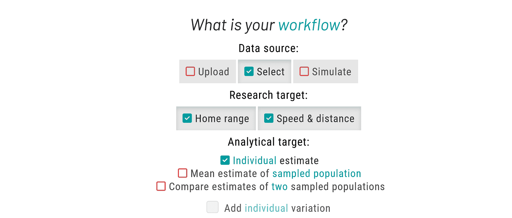
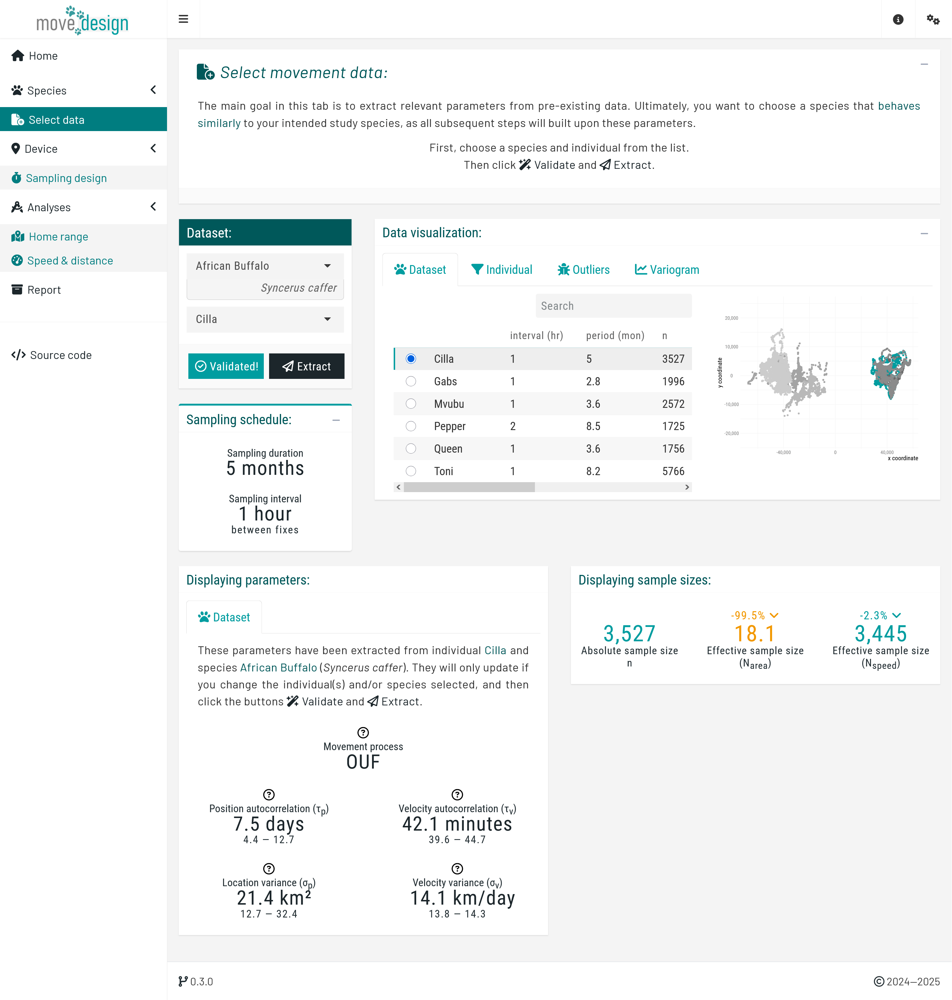
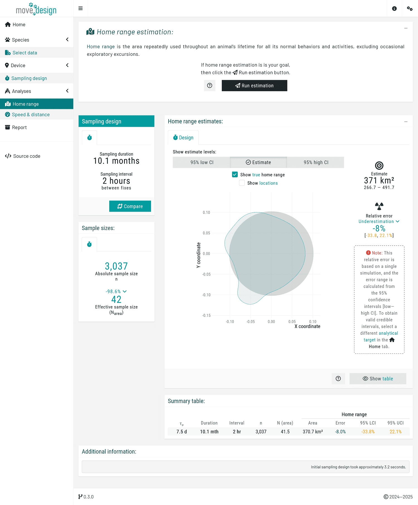
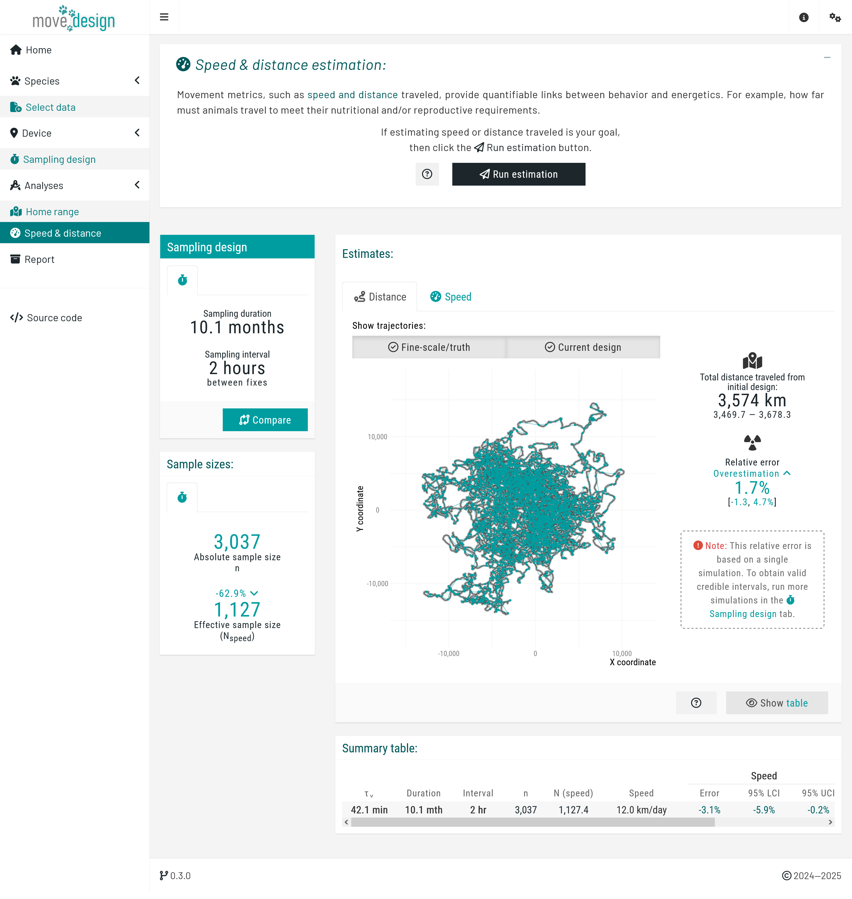

Overview
Walkthrough
This workflow is presented in Silva et al. (2023).

You will be guided through a real animal tracking project available through the package. To simulate data from scratch, exit the tutorial (click the × button above the tutorial box) and navigate to the 'Simulate data' tab, where another guided tour is available.
First, we will navigate to (1) the 'Select data' tab to load a dataset available within the package. Then, we will move to (2) the 'Sampling design' tab to define the sampling duration and interval. Finally, we will proceed to (3) the 'Analyses' tab.
Afterwards, you can review a detailed summary of all outputs in the 'Report' tab.
Please choose Select as your data source to choose from a list of available species. Then, set Home range and Speed & distance as your research targets. For the analytical target, choose Individual estimate.
Data
By navigating to the 'Select data' tab, you can choose from seven species available in the ctmm package. Parameters extracted from these species can inform tracking studies of other species with similar movement behaviors.
First, select the African Buffalo (Syncerus caffer) as your study species. From the dropdown menu, select Cilla as your focal individual and click the 'Validate' button.
When choosing an individual, ensure it accurately represents the movement behavior you aim to emulate. The validation step ensures that we can detect the position autocorrelation timescale (), essential for home range estimation, and the velocity autocorrelation timescale (), for speed & distance estimation.
Once validation is successful, the button should now read 'Validated!' Proceed by clicking the 'Extract' button.

Sampling design
Navigate to the 'Sampling design' tab. Now, we are ready to evaluate the intended sampling design for a future tracking project by simulating data conditioned on the extracted movement parameters.
Step 1. Select a tracking device:
Choose GPS/Satellite logger as your tracking device.
GPS/Satellite loggers automate sampling using satellite systems. However, both sampling duration and sampling interval are inherently limited by GPS battery life. This tradeoff determines how much data can be collected over time.
Step 2. Adjust battery life and fix rate:
Here, you can configure two key parameters: GPS battery life, the expected operational duration of the GPS device, and Maximum GPS fix rate, the longest possible time interval between recorded locations (fixes) over that duration. The device manufacturer typically provides this information, which is listed in the model’s documentation.
Now, adjust the settings as follows: set GPS battery life to 2 years, and set the Maximum GPS fix rate to 1 fix every 6 hours. Then, from the sampling parameters plot, choose a sampling interval of 2 hours.
Step 3 (optional). Add device limitations:
You may include other device limitations, such as location error and success fix rate, to understand the precision and reliability of the sampling schedule under various conditions.
Change Fix success rate (%) to 85%, and the Location error to 10 meters.
Step 4. Validate and run simulation:
Click the ‘Validate’ button until it reads ‘Validated!’, then click the ‘Run’ button.
Two notifications will appear: the first during the calculation of the expected run time, and the second during the simulation and model fitting based on the current parameters. Wait for both to finish before proceeding.

Analyses
Navigate to the 'Analyses' tabs.
Home range estimation
In this step, we use the Autocorrelated Kernel Density Estimator (AKDE) (Fleming et al., 2015; Silva et al., 2022), available from the ctmm R package, to estimate home range area. In the introduction box of the 'Home range' tab:
Step 1. Run the estimation:
Click the Run estimation to generate the home range estimate.
Step 2. Interpret the outputs:
This tab presents three key outputs:
Estimate: The computed home range size, accompanied by the 95% confidence interval (low–high) to account for uncertainty.
Relative error (%): The percentage deviation of the estimate and its CIs from the true home range. Lower error values indicate a more precise estimate.
Effective sample size (Narea): The number of home range crossing events, which influences the reliability of the estimate.
Given the current sampling parameters (sampling interval of one fix every 2 hours and the realized duration of 10.1 months), Narea ≈ 42, indicating approximately 42 home range crossing events occurred within the sampling period.
The visualization compares the estimated home range to the true home range. Ideally, the point estimate should closely match the true home range. The 95% confidence intervals should be as narrow as possible and tightly follow the point estimate.
In our case study, a single simulation yielded wide confidence intervals, suggesting high uncertainty and suggesting that a longer sampling duration may be necessary. However, the relative error was low, indicating that while additional data collection may not substantially change the point estimates, it will narrow confidence intervals.

Speed & distance estimation
For this step, we are using the continuous-time speed & distance (CTSD) estimator (Noonan et al., 2019), available in the ctmm R package. In the introduction box of the 'Speed & distance' tab:
Step 1. Run the estimation:
Click the Run estimation to estimate speed & distance.
Step 2. Interpret the outputs:
The output types here are identical to those in the 'Home range' tab. However, in this case, they apply to distance (comparing the trajectory derived from the selected sampling schedule to the true fine-scale trajectory, shown in grey), and speed. Ideally, both should closely align with the truth.
Wide confidence intervals indicate high uncertainty, suggesting that a shorter sampling interval may be necessary to improve accuracy.
Given the current sampling parameters (sampling interval of one fix every 2 hours and the realized duration of 10.1 months), we have an Nspeed ≈ 1,127. This is the equivalent to 1,127 independently sampled velocities. A higher Nspeed enhances estimate precision and reduces uncertainty.

Report
Click the Build report button to generate a detailed evaluation of how well your sampling design meets your research targets.
The report compiles all settings and outputs in one place, helping you assess whether the sampling parameters were sufficient for a reliable home range area estimate, and/or speed and distance estimate. Use this report to fine-tune your sampling design to ensure robust outputs.

You can compare your results to our simulations based on similar timescales and sampling parameters, allowing for a quick assessment of consistency.